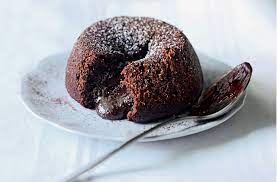

CHOCOLATE FONDANTS

Description....
Chocolate Fondants, dessert of dreams! Perfectly gooey, light and chocolatey. This is one dessert that all your guests will love!
Ingredients:
To line the moulds
- 15g butter
- 1 tbsp cocoa powder
Fondants:
- 125g dark chocolate
- 125g butter
- 1 tsp tea leaves
- 4 eggs
- 100g caster sugar
- 60g plain flour
To serve:
- Cocoa powder to dust
- Clotted cream
Steps:
- Preheat the oven to 200c.
- Brush 6 x 8cm dariole moulds with butter then coat in cocoa powder and sprinkle the tea into the bottom.
- Melt the butter with the chocolate then whisk the eggs and sugar. Add the chocolate mix then fold in the flour.
- Divide between the 6 moulds, place onto a baking tray and bake for 9 minutes.
- Tip onto plates then dust with cocoa powder. Spoon a quenelle of cream on the side.